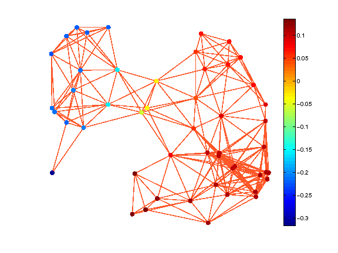

GSP_COMPUTE_FOURIER_BASIS - Compute the fourier basis of the graph G
Usage
G = gsp_full_eigen(G);
Input parameters
| G | Graph structure (or cell array of graph structure) |
| param | structure of optional parameters |
Output parameters
| G | Graph structure (or cell array of graph structure) |
Description
'gsp_full_eigen(G)' computes a full eigendecomposition of the graph Laplacian G.L:
\begin{equation*}
{\cal L} = U \Lambda U^*
\end{equation*}
where \(\Lambda\) is a diagonal matrix of the Laplacian eigenvalues. G.e is a column vector of length G.N containing the Laplacian eigenvalues. The function will store the basis U, the eigenvalues e, the maximum eigenvalue lmax and G.mu the coherence of the Fourier basis into the structure G.
Example:
N = 50; G = gsp_sensor(N); G = gsp_compute_fourier_basis(G); gsp_plot_signal(G,G.U(:,2));
References:
F. R. K. Chung. Spectral Graph Theory. Vol. 92 of the CBMS Regional Conference Series in Mathematics, American Mathematical Society, 1997.